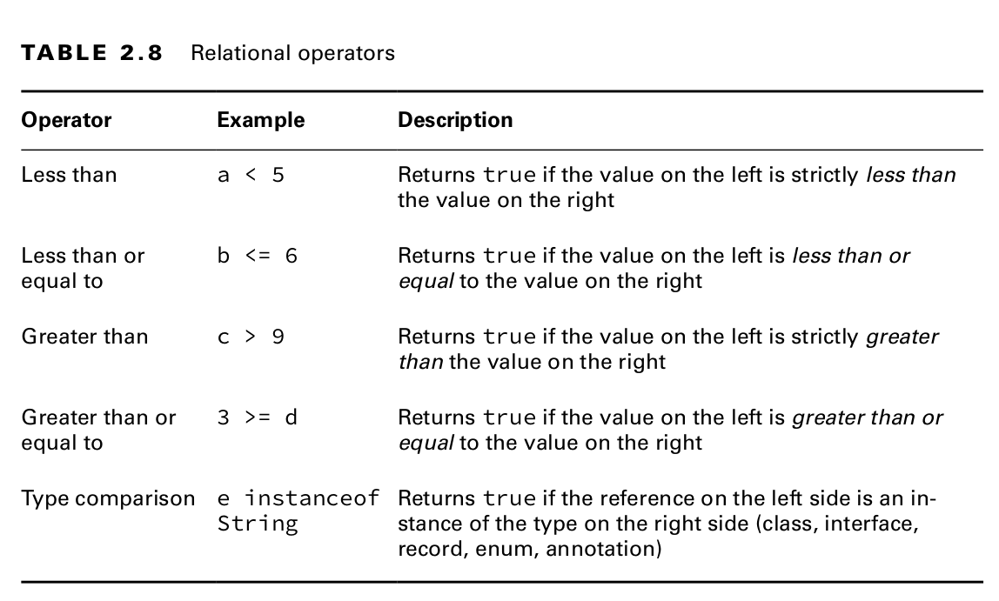

Relational Operators
Relational Operators (<, <=, >, and >=)
- Aka Comparison Operators
Binary Operators revolved around comparing two expressions which return a boolean value.

Numeric Comparison Operators
int gibbonNumFeet = 2, wolfNumFeet = 4, ostrichNumFeet = 2; System.out.println(gibbonNumFeet < wolfNumFeet); // true System.out.println(gibbonNumFeet <= wolfNumFeet); // true System.out.println(gibbonNumFeet >= ostrichNumFeet); // true System.out.println(gibbonNumFeet > ostrichNumFeet); // false
instanceof Operator
It is useful for determining whether an arbitrary object is a member of a particular class or interface at runtime.
public void openZoo(Number time) { if (time instanceof Integer) System.out.print((Integer)time + " O'clock"); else if (time instanceof Short) System.out.print((Short)time + " O'clock"); else System.out.print(time); }
Notice that we cast the Integer value in this example.
It is common to use casting with instanceof when working with objects that can be various different types, since casting gives you access to fields available only in the more specific classes.
It is considered a good coding practice to use the instanceof operator prior to casting from one object to a narrower type.
Invalid instanceof
If the compiler can determine that a variable cannot possibly be cast to a specific class, it reports a compilation error.
null and instanceof
Calling instanceof on the null literal or a null reference always returns false